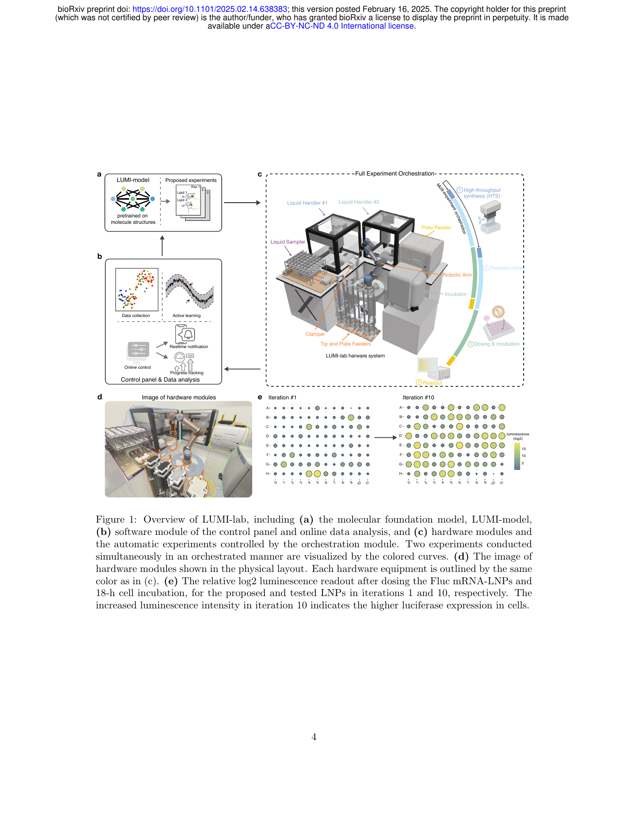
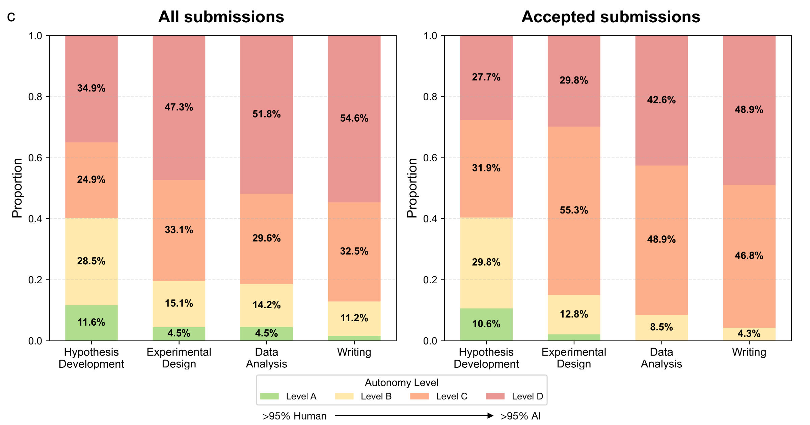

Part One · Engineering
Cat Boarding
Web App
Web App
Zero to Production, Built End-to-End with Claude Code
Web App · Top-venue Paper · Technical Deep Dive · Discussion
The Steam Engine Moment of the Information Age
 GitHub Copilot
GitHub Copilot Cursor
Cursor Gemini CLI
Gemini CLI Claude Code ✦
Claude Code ✦ OpenClaw
OpenClawThink of it like a Markov chain: given all previous tokens, predict the next one — then repeat. The model never “plans ahead”; it only ever answers: what comes next?
Context window = working memory
Everything the model sees is in one long sequence — no persistent state between calls.
Output = probability distribution over vocabulary
The model outputs a distribution P(next token | all previous). Temperature controls how sharp that distribution is.
Everything LLM sees on each call:
Agent has no memory — it can only see what's in the context——它只能看到 context 里有什么
Context Window Evolution
But How Large Is Your Project?
What Agent does:
For every LLM call, decide which information goes into context —
which files to read, which preferences to remember, which history to drop信息塞进 context——
读哪些文件、记忆哪些偏好、丢掉哪些历史
📂
Which files to read
🧠
Which prefs to keep
🗑️
Which history to drop
Today's Core Argument
A structural shift in efficiency, not just a new tool.
We had no system at all before — everything was in our heads or on paper, total chaos.
In between research sessions, I spent a few days building her a system with Claude Code.，记录全靠脑子和纸，非常乱。
research之余的小项目
Traditional Web Development
With Claude Code ✦
App Development
✓ schema.sql generated schema.sql 已生成
✓ HTML + CSS written HTML + CSS 已写好
✓ errors auto-fixed 报错已自动修复
✓ ready to deploy 可以上线了
The execution barrier has dropped — your ceiling is how many worthwhile things you can think to do.——跨领域不再是瓶颈。你的上限，是你能想到多少值得做的事。

Conformal Prediction × Annotation Ambiguity
When ground truth is inherently ambiguous (annotators disagree), do CP's coverage guarantees still hold?
Calibration in This Setting Hasn't Been Done
Annotation ambiguity + calibration — even “how to evaluate” has no consensus
Pivot → CalibrationAGT
Calibration in this setting is equally worth systematic study.
Literature Review — papers, abstracts, notes · All text
Research Proposal — hypothesis, design, rationale · Text
Experiment Scripts — code is text
Errors & Results — stack traces, CSV, logs · Text with instant feedback
Figures — matplotlib / seaborn script · Also text
Paper (LaTeX) — everything converges · Into text
Before: ChatGPT
Now: Agent
You set the direction — Agent reads, executes, verifies
→ You're the Director, not the middleman
What is a Skill?
A Markdown file telling the Agent how to handle a task category. Trigger it — the Agent runs the full workflow.
What is Skill-Creator?
A skill for writing skills. Describe your need — Agent writes the spec. 的 skill。描述你的需求，Agent 自动生成结构化的工作流规范并保存。
Use Cases
Literature review · paper writing · experiments · code review · data preprocessing — any repeatable workflow
Skills = reusable workflows — define once, invoke repeatedly
Examples: /paper-review review workflow ·
/experiment-log experiment record ·
/debug-cluster GPU cluster debug ·
/weekly-report auto weekly report
Pipeline
Phase 0 · Setup
venue · topic · compute → config.md
Idea Loop · Phase 1–5
Literature Review
ArXiv MCP · WebSearch · gap identification
Idea Generation
Generate 4 candidate ideas
6-Agent Debate ← subagents
Critic · Champion · Devil's Advocate…
AC Gate
REVISE → loop · REJECT → drop · ACCEPT ↓
Pilot Experiment
Quick feasibility check · PASS to continue
Full Experiments · GPU Auto
SSH · gnvitop scheduling · autonomous execution
6-Agent Result Debate ← subagents
Result interpretation · Contribution positioning
Paper Writing + Figures
seaborn figures · parallel section writing
Review ← subagent → Submit
Revisions · Telegram notification
/ai-research-paper is just a starting point —
any repetitive workflow can be packaged as a skill.
更自动化的 Research Pipeline
AutoResearch · SibylSystem
github.com/Sibyl-Research-Team/
AutoResearch-SibylSystem
扫码访问

Figure 1: LUMI-lab overview — foundation model + active learning + robotic lab → 1,700 LNPs → 20.3% lung gene editing in vivo
Run in tmux on a server — session persists across disconnects
VS Code plugin cannot guarantee session continuity
VS Code plugin is great for instant tasks — e.g. making slides
Good for short, focused tasks that finish quickly
Terminal: use Ghostty — officially recommended by Anthropic
Claude Code is still early-stage — Ghostty has the fewest bugs
Chrome extension worth trying — can directly control the browser UI
Better compatibility than the local desktop app
Claude Code
Light use — ~4 hours of focused work per day
Sufficient for most — daily research + project work covered
Run 5–10 projects in parallel simultaneously
Codex (OpenAI)
Limited Codex access included
Parallel tasks, 5h rolling cap + weekly limit — not truly unlimited
Task too big to fit in one context?
The main agent spawns multiple sub-agents that handle subtasks in parallel, returning only summarized results to the main context.，只把摘要结果返回主 context。
Why Does Context Grow So Fast?
Tool outputs (tool observations) account for 84% of context
The model's own words are only ~10%
模型自己说的话只占 ~10%
Method 1 of 2
Observation Masking
Replace tool output with a single line:
“There used to be tool output here”」
Looks brutal — but experiments show it works about as well as LLM summarization
LLM Summarization
History too long → compress it with LLM summarization
Claude Code has this compaction mechanism built in
Sub-agent = Automatic Compression
Language models dislike compressing their own memory
So compression is usually enforced by the Agent framework压缩自己的记忆
所以压缩通常是 Agent 框架强制执行的
Why it's powerful: shell commands are text, and text is exactly what LLM excels at
一次对话可能塞入 4000+ tokens 的系统信息——
这就是 agent 能持续"记住"项目状态的原因
Agent as a persistent teammate — remembers context across sessions, reacts to events automatically, and schedules its own check-ins.——跨会话记住上下文、对事件自动响应、自行安排检查点。
Work is about being accountable for outcomes负责
不是对过程负责，不是对代码行数负责，不是对"我自己写的"负责
"Vibe coding — fully give in to the vibes, embrace exponentials, and forget that the code even exists."
X · Feb 2025 → now: "agentic engineering"

"We may see the first AI agents join the workforce and materially change the output of companies."
Blog · Jan 2025
"AI could soon compress decades of scientific progress into just a few years."
Machines of Loving Grace · Oct 2024
Agent lets anyone churn out papers fast — hundreds per day on arxiv, reviewers already can't keep up
arXiv annual submissions · arxiv.org/stats (2025: exceeded 28,000/month)

Maybe: asking the right question is the real core competency，才是真正的核心竞争力
Stanford · Oct 2025 · agents4science.stanford.edu

AI can generate papers — but asking the right question still needs humans仍然需要人
Ref: Hung-yi Lee · AI Agent (3/3) · NTU 2026
Andrew Hall (Stanford) · 「100x Research Assistant」

PhD student: 16h / $1,040 vs Claude Code: 1h / $10 (104× cheaper)
But: humans haven't been replaced
People vs. Agents
Do juniors still have a shot?
This isn't pessimism — it's a new starting line


Agent Harness = scaffolding around the model: tool definitions, prompts, workflows, context management. Same model. Different harness. Completely different results. = 包裹在模型外的脚手架：工具定义、Prompt、工作流、上下文管理。
同一个模型，换个 harness，结果天壤之别。
Anthropic · CORE-Bench
Same model (Claude Opus 4.5). Switched from a generic scaffold to Claude Code harness. +36 points.
LangChain · Terminal Bench 2.0
Model unchanged. Added self-verification loops, context engineering, loop detection. Top 30 → Top 5.
OpenAI · Codex Harness
Built a 1M-line production app in 5 months with 3 engineers — 1/10th normal dev time. Every line written by Codex agents.
Progressive Disclosure: show the model only what it needs, when it needs it — this single mechanism explains most harness improvements.：每一步只让模型看到它需要的信息，其余全部隐藏。这是大多数 harness 提升的根本原因。
Tell the agent exactly when NOT to use a tool调用
One engineer connected 12 tools. The agent kept calling the same endpoint twice with different params. He cut to 4 tools with precise descriptions — 40% fewer useless calls.
One rule in a config file beats adding a new tool
Vercel's agent had a huge toolbox. Agent got confused, made redundant calls. They stripped it down to bare bash access. Success rate: 100%. Speed: 3.5× faster.
The harness you built for last year's model may be hurting today's
Manus rewrote their harness 5 times in 6 months, stripping complexity each time. One engineer deleted an entire memory system on a Thursday — by Friday, response latency dropped 2.3s.
"模型越强，我们越应该让开，别挡着它。" — Peak Ji，Manus 首席科学家
Real-time GPU monitoring across all lab servers —
see which cards are idle, check if you're hogging too many.
~/.ssh/config, SSHs into all serversThanks
github.com/Linwei94/talks